So you wanna be a DJ? Sick, you're in the right place. Already spinning but want to level up? Even better.
I wrote this to help DJs sharpen their skills, fix common mistakes, and learn the little tricks that save your ass when shit inevitably goes wrong — whether you're brand new or 10 years deep.
I've been DJing for 9 years across clubs, house parties and way too many 5am kickons. This is everything I wish I had known earlier — DJing gets surprisingly technical and there are heaps of quality-of-life hacks no one warns you about. This'll save you time, fill in the gaps, and make your life easier behind the decks.
Most of what follows is geared toward Pioneer DJ / AlphaTheta equipment and Rekordbox workflows, and I'm assuming you already know how to press play and beatmatch.
If you CBF reading manuals — good, you're my target audience. But trust me: knowing your gear inside and out makes a massive difference, and that's exactly what this guide is here for. Let's get stuck in.
Sort Your Shit:
Files, Drives & USB Survival
It's important to get your infrastructure set up properly — the basis on which you build your digital library, your Rekordbox music collection.
Getting good quality tracks is one of, if not the most important thing about DJing, so let's start there. I want to make one thing very, very clear: YouTube and Soundcloud rips sound like shit on a club system. They're fine for practicing at home, but that's a slippery slope, and I guarantee you'll never replace them with higher-quality copies like you keep telling yourself you will. Just don't do it.
Beatport / Bandcamp and Soundcloud / Hypeddit are your friends. At an absolute minimum, you want 320kbps MP3 files. Lossless files like WAVs are great, but they eat USB space quick. FYI, iTunes provides files in 256kb AAC, which is slightly better sound quality than a 320kb MP3 file. Still perfectly fine for DJing, but check the compatibility with the decks you'll be playing on. I'll touch on this later. You can see the bitrate of your tracks once you've imported them into Rekordbox by right-clicking your columns in the browser and making sure that bitrate is ticked.
Most people start building their library just on their computer's internal hard drive, which is fine when starting out, but as your collection grows you might find yourself running out of space very quickly — especially if you use the computer for other things like gaming or work. Most professional DJs use external hard drives to get around this. Their music collection and Rekordbox database live on an external hard drive/s. A number of benefits:
- If your computer dies or you upgrade and purchase a new computer, you can easily download Rekordbox, plug in your external drive, select the database on it and you're back up and running in less than 10 mins.
- It's easy to create backups of your music collection. Just clone the entire drive — no need to individually select folders on your PC to copy.
Let's start with the hard drive format. I recommend exFAT for your music collection (FAT32 for your USBs, but I'll talk about that later) because exFAT is compatible with both Mac and Windows. You never know what route you'll go down in future, so it's good to be flexible now (hell, I went from Android to Apple). Use your chosen OS's built-in tools to format the hard drive and name it "YOURDJNAME's Drive".
Next, open Rekordbox and navigate to Preferences using either the gear symbol in the top right or File › Preferences (instructions can vary based on Rekordbox version and OS). Navigate to the Advanced tab (three dots) then Database management, and select your newly formatted external drive. As you have no tracks imported yet this will be quick (I cover moving your library in §12 — warning: the process sucks). Check it worked by navigating to your hard drive in Finder/File Explorer and seeing if a PIONEER folder has been created. If there is, excellent. Create a new folder called Music or Contents on the root of the drive, not within the Pioneer folder. This is where you'll move your music files before importing them into Rekordbox.
Don't just download your tracks and drag them from the Downloads folder into Rekordbox. Some PC cleanup tools will just straight up delete everything in there to free up space on your PC.
Next, let's talk about USB flash drives and, by extension, SD cards. You'll want to buy good quality USB-A / USB-C (or combo) flash drives and/or SD cards (normal size, not micro SD). Buy multiple — I take 4 USBs to my gigs and an SD card or two. Brand names like SanDisk or Samsung are the way to go: less chance of it corrupting on you when you show up to the gig, and even if one or two do corrupt, you have backups. (Chuck a colourful loop or charm on your USBs so you know which ones are yours.) Also, it's not a bad idea in this day and age to buy a USB that has USB-A on one end and USB-C on the other, as there are heaps of new laptops these days that only have USB-C.
SD cards, you ask? Why? CDJs up to the CDJ-3000 (the 3000X replaced the SD card slot with USB-C) can also accept these! Three main benefits:
- Your fellow DJs can't accidentally pull out your SD card. Everyone has done it — I've done it to other people and they've done it to me.
- USB thieves. I've seen plenty of videos on the internet of the crowd stealing USBs out of the decks, and even people in the booth. It's always good to carry some on you.
- Flash quality. Manufacturers tend to use better-quality flash for their SD cards, as they are used for photography and videography mostly.
SanDisk Ultra USB 3.0 · Samsung Bar Plus USB 3.1 · SanDisk Extreme Pro SD Card
Not all CDJs can read all file system formats — a pain in the ass, I know. Modern Windows computers use NTFS or exFAT, and Macs use HFS+ (MacOS Extended Journaled). Macs can read NTFS thumb drives but can't write to them; PCs can't read or write HFS+ at all. (HFS+ is shitloads better, just a heads up — quicker read/write times and less prone to corruption.)
However, there's one file system both Macs and PCs can read and write to: FAT32. Pioneer / AlphaTheta's CDJ media players can also read music from FAT32 drives (FAT16 and HFS+ are included too). For compatibility, format your sticks and cards with FAT32 — it's the only format all CDJs support. You never know what equipment will be there when you rock up, so it pays to be prepared; you don't want to show up expecting to play on 3000s and find your USBs don't work because you formatted them with exFAT. Windows cannot natively format over 32GB with FAT32, so I recommend using Rufus (most reliable), the HP Disk Storage Format Tool or FAT32 Format. Mac can do it natively.
Select MS-DOS (FAT32) when formatting your USB, not exFAT, and make sure MBR is selected as the partition scheme instead of GPT/GUID. Make sure you reformat your brand-new USB drives, as they may be formatted as GPT/GUID from the factory. Click here for a full list of CDJ format compatibility.
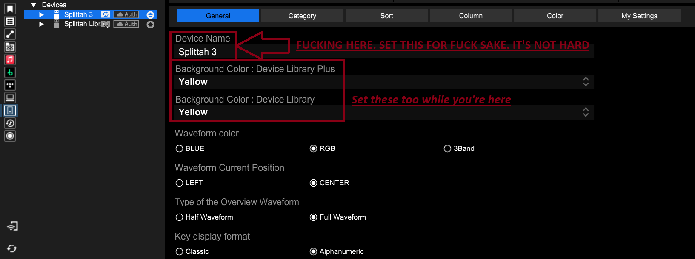
Name your fucking USB drive, holy fuck. Set it to your DJ name, phone number or some other way to contact you — even put both your DJ name and mobile number in here. Please. Also set your USB a background colour while you're on this page: this is the background colour of your USB when browsing through menus, and it also shows up in the USB light of newer CDJs.
Seconding both these points. It's important to be able to easily tell which USB is yours when playing B2B, or if it gets left next to a CDJ in the DJ booth. I've had a USB returned to me because I named it, had a unique attachment on it, and a friend picked it up. Keaton and Julia, I'm looking at you. NAME YOUR USB'S.
Prep It Like You Mean It
Now you've got your good quality tracks and your infrastructure set up, you need to combine the two — let's import your music into Rekordbox.
You'll want all your files in one music folder on your external drive (subfolders are okay if you want) to assist Rekordbox in locating files if they ever go missing. Once you've copied your music onto your hard drive, drag and drop them into your collection in Rekordbox.
You'll get a pop-up box asking how you want your music analysed. You'll have options for BPM, Key and a couple of others for advanced features most DJs don't use: Phrase, Vocal and Cue (AlphaTheta charge a subscription fee for Vocal and Cue analysis, I believe). If you primarily play hip-hop and R&B you'll want your BPM range lower, but if you play high-speed music like Drum and Bass or Hardstyle you'll want a high BPM range. For example, with 78–155 selected, your DnB tracks will most likely be analysed at 87 BPM, not the 174 BPM most DnB actually is. (I know Kaliopi DJs at half time — 140 at 70 BPM and DnB at 87 BPM — but that's down to personal preference.) I'd have Key ticked too; it's important for harmonic mixing, which I'll touch on later.
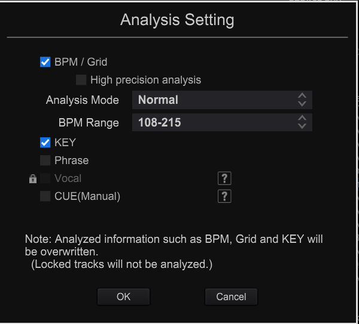
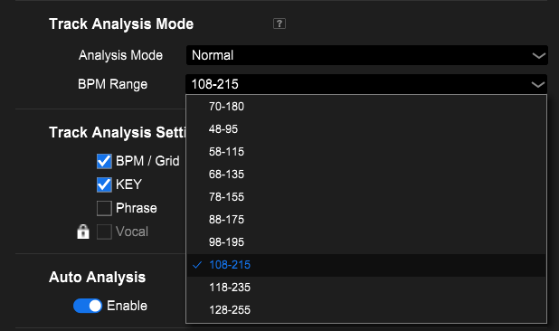
Be wary of dynamic analysis. This won't have a consistent BPM when you play your track out — it'll vary by a couple of decimal points as the track plays (e.g. a 120bpm track shows 120.2, 120.1, 119.8). But it is useful for older tracks that weren't produced on modern software.
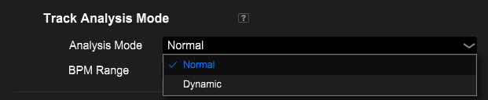
Now there are a few things to double-check on your tracks. Make sure they're tagged with artist, track title and genre correctly. This makes it a lot easier when scrolling through your tracks — especially when you can't find the one you want and use the search function. Genre will be important when setting up playlists. The best way to name your tracks:
- Title: Original Track Name (Original / Extended / VIP Mix / XYZ Remix)
- Artist: Original artist
- Genre: insert the sub-genre here
For example, if it's a tech house track you'd have Tech House as the genre, not just House — and you'll see why later. If you're unsure of the genre, just try and fit it into a category as best you can.
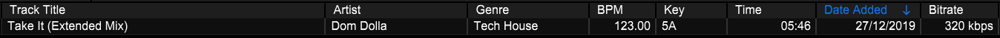
Next, check your BPM and beat grid have been correctly analysed. Rekordbox is generally pretty good, but it's not always 100% accurate getting beat grids exactly at the start of a kick. Most dance music is 4×4 — four beats make up a bar, and there are usually four bars per section or a multiple of that: 4, 8, 12, 16, 24, 32 bars are the most common. Set the red bar line (not just the white beat line) to the start of the kick:
- Drag the track so the red line aligns with the kick.
- Hit GRID (bottom left), click grid snap.
- If needed: ×2 to double BPM, C to cue and snap, then ×1/2 back to normal.
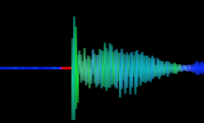
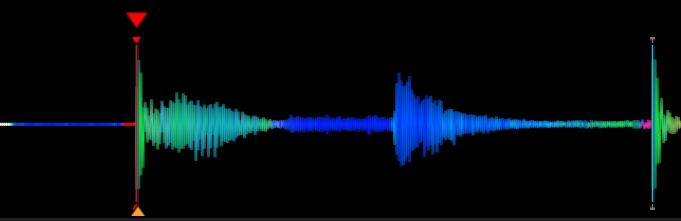
On high-BPM tracks the grid is often half a beat off — hit ×2, drag the marker near the right kick, and with Quantize on (Q) hit C to snap, grid-snap, then ×1/2. Way faster than zooming all the way in. For tracks that change BPM (Sub Focus & John Summit "Go Back", drumstep, edits) set the BPM manually and drop a change marker — find a YouTube walkthrough and practise on a simple house track first.
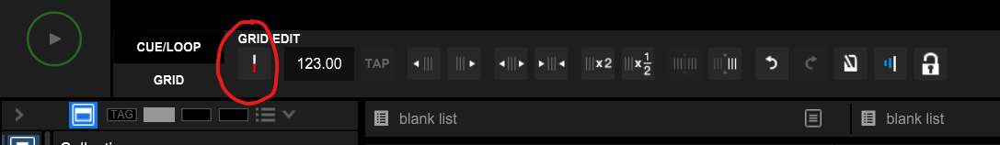
Hit analysis lock when you're done. It stops you nudging the grid by accident, and tells you at a glance the track's been prepped.
Dumb lazy DJs don't set memory cues. Smart lazy DJs set memory cues. Your last track is ending soon and you want to start a new one from a specific point in the track? You can either use the Search buttons on your decks to get where you want, or just skip straight to it by hitting the Cue Call button on the top right of your platter. Save yourself time, stress and embarrassment.
With your grid set and Quantize on, you can cue a whole track in under 30 seconds. Load it up, then: Space play/pause, C cue + snap, M store memory cue, Q quantize, arrows to search. Play → pause at the spot → C → Space → M. Much faster than doing it on the decks and syncing back.
You can also save memory loops: set the in and out points and store like a cue. Auto loops fire as you reach them; non-auto loops only trigger when you call them.
Settings › Keyboard › Player A:
Loop In can stay on I as well. And 4 doubles as the 4-beat loop — if you want to keep it for that, set Hot Cue D (and its clear) to T / Ctrl+T instead. Thank you Tai, GOAT.
Playlist Alchemy
A million ways to organise — Gigs, Mixes, Genres, Years. Manual playlists are great. But there are smarter ways.
For a normal playlist: add your tracks, click the BPM or Key column to sort, then right-click the track-order number column › Renumber Track Order. Now it shows up on the decks sorted exactly how you set it.
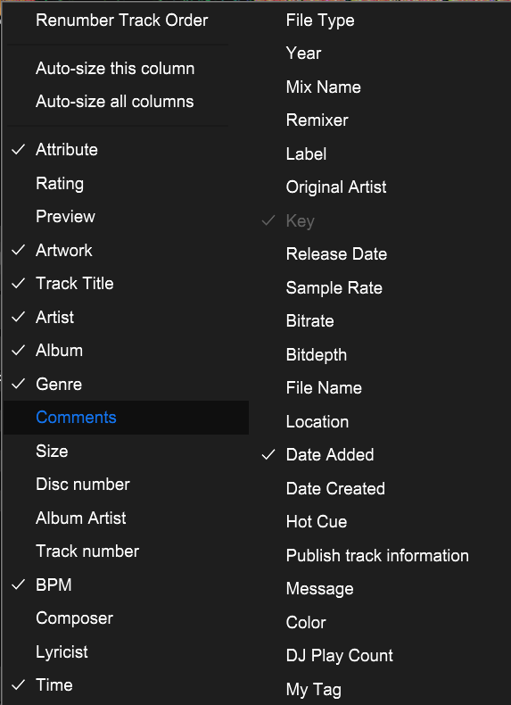
Remember earlier I mentioned how important it was to have your tracks tagged correctly with genre? This is where intelligent playlists become very powerful. You can create a playlist that Rekordbox automatically fills with tracks defined by whatever parameters you set:
- A playlist that grabs everything with "house" in the genre — pulling house, tech house, bass house in one hit. Or "All DnB" across jump up, neuro, liquid.
- A New Tracks list that grabs everything added in the last 30 / 50 / 100 days. Added tracks right before a gig but didn't tag them? If you synced your USB, they're in there.
- Monthly date-based lists — a 2025 folder with one intelligent playlist per month, auto-filling by date added.
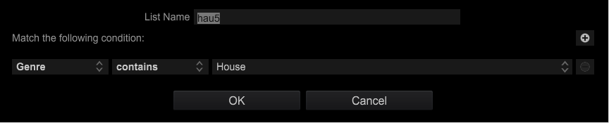
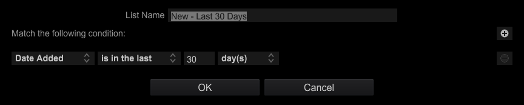
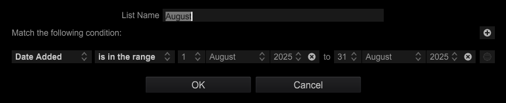
CDJs don't keep time. Date-based intelligent playlists only update when you sync the USB with Rekordbox.
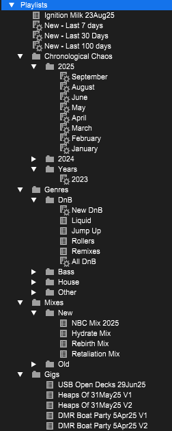
Device Library vs
Device Library Plus / OneLibrary
The language Rekordbox and your gear use to talk to each other — and why a firmware update can suddenly stop your USB reading.
Device Library stores and organises your track data: BPM, waveforms, playlists, cues, tags. Device Library Plus (now OneLibrary) is the updated format for newer hardware — massively faster mount and load times.
Some newer gear (XDJ-AZ, CDJ-3000X) only supports Device Library Plus / OneLibrary. Old-format exports won't be recognised.
OneLibrary is the same concept rebranded to highlight cross-platform support — making Rekordbox USBs work with other brands. Algoriddim djay Pro supports it now, Traktor's on the way. AlphaTheta basically want everyone speaking the same USB language. Finally.
| Milestone | Rekordbox version |
|---|---|
| Device Library Plus introduced | v6.8.1 |
| Last v6 build before v7 | v6.8.6 |
| Renamed to OneLibrary | v7.2.5 |
| Current at time of writing | v7.2.14 |
For full compatibility across all current gear without jumping to v7, update to v6.8.6 — it works sweet with old and new CDJs/XDJs. Grab v6 here, older v7 builds here, and the compatibility list here. Personally I run both v6 and v7.
CDJ-3000 firmware v3.30 (21 Oct 2025) removed the ability to read Device Library exports. AlphaTheta rolled it back to v3.20 — even more reason to be on RB v6.8.6 in case they fuck it up again. Current firmware is v3.22 (26 Jan 2026). Watch this space lol.
Hardware Tips & Tricks
Original gold from Sydney legend A-Tonez (dropping it on Facebook back in 2016 when most of us were still beatmatching with Sync on), updated for current Rekordbox and CDJ models — less fluff, more "just do this."
First club gig on CDJs and shitting bricks? Don't be. If you've been on Pioneer controllers it's a smooth transition — button and screen layouts are very similar. Like going from a Suzuki Swift to a Ford Ranger: still a car, just more bells and whistles. The one thing that trips people up: on controllers you watch stacked waveforms on one screen; on CDJs each deck has its own screen, so you glance back and forth. You'll adjust quick. Trust your ears. The current master deck shows at the top of the waveform — that's the Master Player Display (more in §06).
Save your preferred CDJ settings to USB so every plug-in is exactly how you like it:
- Open Rekordbox › Preferences (⚙)
- DJ System › My Settings
- Set everything how you like
- Plug in your USB — when it prompts to update, hit Yes
- At the venue: insert USB › Menu › Load My Settings
My full recommended list is in the Appendix.
"Which USB is safe to pull?" — every DJ, sweating bullets. Don't guess and nuke the dancefloor:
- Tap (don't hold) the USB Stop button.
- Sound dips slightly → that USB is in use. Don't touch it.
- Nothing changes → probably safe to eject.
On CDJ-3000s the screen shows your USB colour up top, and a blinking USB light = in use. The 3000 caches the track to memory — yank it mid-set, plug back in, carry on. CDJ-2000NXS/NXS2 drop into an emergency loop. CDJ-900s/2000s have no fallback — RIP.
The little white lines under the waveform are 1-minute markers — great for estimating how far into a track you are, spotting the next section, and lining up transitions without overthinking. Not to be confused with beat grid lines, which run through the waveform.
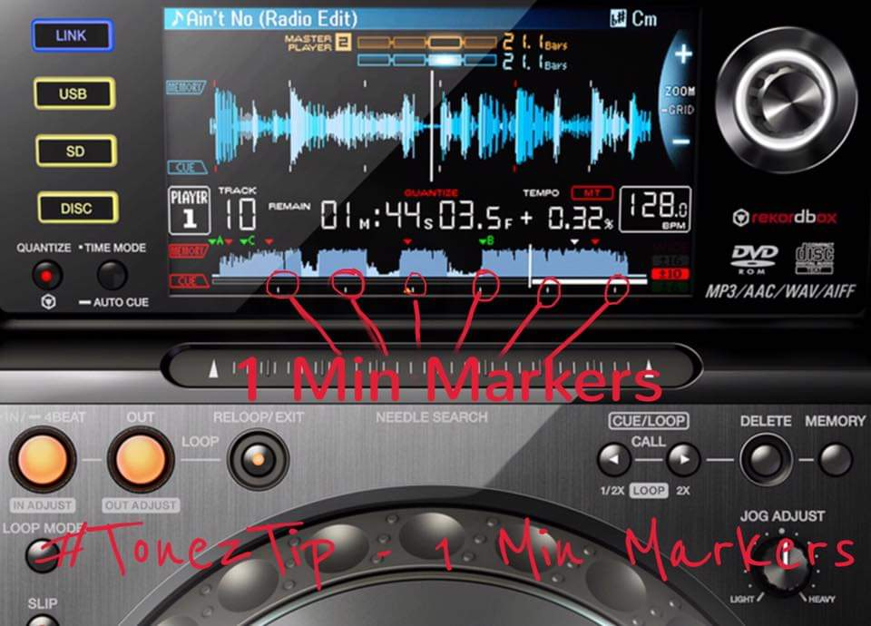
Two decks, one dies. Don't panic — emergency loop trick:
- On the mixer set Beat FX to ROLL, select the channel of the working CDJ.
- Engage an 8–16 beat loop.
- Switch the FX channel selector to an empty mixer channel.
- Cue the loop in your headphones, fade out the live deck.
- Load your next track, beatmatch to the loop, mix out.
- Turn off the FX. Crisis averted.
Don't find out on stage. After exporting: Devices (bottom left) › your USB › Playlists › load a few tracks from top, middle and bottom. All play from the USB? You're good. Don't? Re-export or reformat and try again. Always safely eject, always carry backups — I take 4 USBs everywhere.
ON: cues and hot cues snap to the grid — great if your grid's perfect, frustrating if it's off. OFF: cues land exactly where you want — riskier live, more accurate in prep. In Rekordbox toggle bottom-right (blue = on); on CDJs it's bottom-left of the screen (red light = on). Set your grids properly and this is a non-issue.
Deck 1 playing and set to Master? Hold Sync on deck 2 for a perfect duplicate. Good for creative effects (key shift, FX layering), a clone safety net if a deck dies, mid-set flexing, or when deck 2 won't load tracks but deck 1 works.
See the Tag List button up top and Tag Track/Remove above the scroll knob? Most underrated combo on a CDJ. Browsing and spot a track for later — highlight it, hit Tag Track. It gets a red tick and joins your Tag List. Press Tag List to see everything you've flagged this set. Great for digging through large playlists, planning your next few mixes, finding tracks that would work later in the set, and B2Bs where ideas come and go quickly.
Tag Lists are stored per media source. Switch from USB A to USB B and the list looks empty — switch back and it's all there. Think of it as a temporary playlist you build through the night.
Forgot to set cues? Use SEARCH «/» to get close, then the platter to dial in. Get comfortable and you'll move around tracks surprisingly fast with no cues at all.
Instantly move forward or back by a set number of beats, perfectly in time. First on the CDJ-2000NXS2, expanded on the 3000 (dedicated buttons above the FWD/REV lever). Common lengths: 1, 2, 4, 8, 16, 32. Beats, not bars — 4 beats = 1 bar.
- Fix a missed mix: overshot by 8 beats? Jump back and retry without touching the platter.
- Skip a breakdown: too long for the room? Jump 16 or 32 to the action.
- Extend a mix: jump back, replay part of an intro or outro.
- Quick track navigation: move around a track much faster than scrubbing through the waveform.
- Emergency recovery: wrong cue point? Often saved in one press, crowd none the wiser.
Beat Jump follows the beat grid. Badly analysed grids = jumps that don't land. It feels pointless until the first time you completely fuck a transition and recover it in one button press. Then it's part of your workflow forever.
Connectivity — USB-C replaces the SD slot (gutting, but worth it now laptops drop USB-A). Cloud Play streams from Rekordbox Cloud on compatible gear (needs a sub, and most clubs aren't online anyway).
Library & browsing — Track ID Hide keeps unreleased IDs off the display (not from techs running ShowKontrol though ;)). Copy & Paste Search: tap-hold to copy a name, paste into search. Playlist Banks group your most-used playlists — House, DnB, Weddings, Festivals, Warm-Up — no endless scrolling.
Cueing & performance — Gate Cue (hold-to-play vs play-on-release hot cues), Smart Cue (the Cue button follows your last hot cue), Needle Search + Hot Cue integration, and Touch Preview — hold the waveform preview while browsing to hear a track in your headphones (with LINK CUE enabled) without loading it. Minor until you use it; then it transforms track selection mid-set.
Pro DJ Link
The protocol that lets CDJs talk to each other — shared sources across decks, Master Track, Sync, On Air and more. Set player numbers, link with ethernet through a switch, and link the DJM mixer too.
Or multiple CDJs show the same number: unplug the ethernet cable, hold Menu, and set the player number to the mixer channel it's connected to. Plug back in — On Air and Master Track behave properly.
Your jog ring goes white → red to show that deck has the fader up and is live to the crowd. Brightness is adjustable in CDJ settings (saveable via My Settings). Especially handy after a few beverages.
Linked correctly, the top of your CDJ shows a visual beatmatching aid for the master deck — but don't rely on it, use your ears:
- CDJ-2000NXS: bar phase meter (Type 1)
- CDJ-2000NXS2: line phase meter (Type 2); tap for the old bar meter
- CDJ-3000: full master waveform; tap to switch to the Type 2 line meter
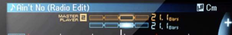
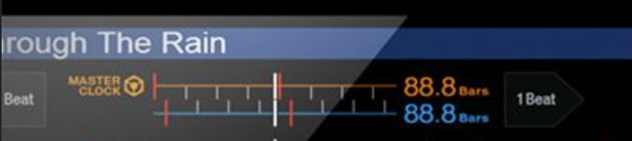
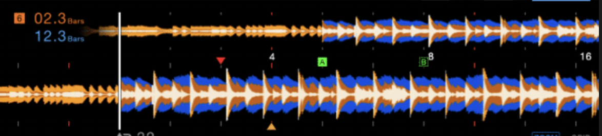
Set defaults in Settings › DJ System › My Settings › DJ Setting (Phase Meter type, and Waveform/Phase Meter display for the 3000). If the master isn't showing correctly, press Master on the deck you're transitioning from (next to Sync).
Because all of them — and the mixer — connect through a network switch. I recommend an 8-port gigabit switch (4 decks + mixer = 5 ports, leave room). Adding the mixer gets you On Air and BPM sync into the mixer's beat effects — one cable, worth it. You can also link a laptop running Rekordbox in export mode to access your whole library like a USB. Avoid Wi-Fi linking live — fine at home, not stable enough for sets. Front-of-house can ride the same network to sync lights and visuals (and may be able to start/stop tracks — like an intro before the headliner walks on).
DJM-V10, can I run 6 CDJs? Yes — but only CDJ-3000s (AlphaTheta extended the protocol in a properly cooked way; a 2000NXS2 can't even join channels 1–4 if a 3000's on 5 or 6). Fancy pants richy rich over here, fuck you — that rig is almost $34,000 AUD. Only got 2 CDJs? Connect them directly to each other to share sources and see the other deck above your waveform. Carry a spare link cable? Not a bad idea — the 6 P's: Proper Preparation Prevents Piss Poor Performance.
The Holy Trinity:
Bags, Booth & Bunnies
A survival guide for pre-gig prep, smooth handovers, and dealing with the uninvited. You're a professional — get your shit together.
Check your DJ bag (not the other bag): headphones · spare 3.5mm-to-¼" jacks · multiple USBs (I carry 4 — two in the bag, two on me) · optional USB booth light for the mixer. Test your USBs before you leave home (§05-F).
Don't dabble in substances before you play. A couple of drinks for the nerves is fine — don't get wasted. You're a professional with a reputation and you're a role model whether you realise it or not. No judgment, but there's a time and place.
- Test your USBs on the actual decks if you can — before doors, or if the opener doesn't mind.
- Rock up 30 min – 1 hr early. Shows you're there to support the event that took a chance on you.
- Find the promoter and let them know you've arrived.
- Approach the decks 3–5 min before your set, not earlier.
- Wait until the current DJ isn't mid-transition or working the crowd, say a quick hi, plug in your USB without getting in the way.
- Don't hover — give them 1–2 metres, hang to the side. If they're the headliner, wait off-stage but visible until they signal you. If they run over time, let them; they're why the crowd's here and you still get paid for your slot.
- Don't mix out of their last track immediately — let it breathe. For a headliner, let it play right out so the crowd can cheer, then a quick mic shoutout from one of you.
- Most DJs eject their own USBs — watch so they don't pull yours and drop you into an emergency loop lol.
Set's done — enjoy the night. Got another gig? Find the promoter, quick thank you, explain you're ducking off; they'll get it. Can't find them? Shoot a text.
Booth bunnies: anyone of any gender's welcome, just no drinks near the decks and give yourself room to work. Too many people don't get the responsibility that comes with being in the booth.
Denying requests: you'll cop them at every kind of event, mostly commercial. A girl once asked me for hard techno when the next DJ was about to play UKG. Don't tell them to f*** off (even if you want to) — listen, politely decline, maybe mention it doesn't suit the flow. Get a good request? Get excited: "Hell yeah, let me see if I've got it" (even if you know you don't lol).
You're paid to provide the entertainment — but without them you're not there. Be professional. They may hand you music guidelines, or tell you to play R&B while the room's loving commercial house. Read the room. Some owners are chill, some are on a power trip. Don't fight them mid-set — be polite, stay flexible, protect your reputation.
Don't ask for guest list — ask if there's a discount code. Don't ask for set times — show up early. Don't send unsolicited mixes (same rules as dick pics). Buy a ticket. Stay after your set. Support other DJs. Be easy to work with. Don't be cooked. The music gets you noticed; your reputation gets you booked again.
Break Ya Neck,
Not Ya Ears
Do your ears ring after a gig? Those rooms hit 100+ dB easy. Repeated exposure without protection = permanent tinnitus. Foam plugs work in a pinch, but we can do better.
For performing and going out, invest in musician's earplugs with at least a −15 dB filter — ideally −20 to −25 dB, bringing things to a safer ~70 dB without killing the vibe.
Gigging regularly? Get custom moulds from an audiologist. ~$200+ AUD but worth it — super comfy, long-lasting, made for your ears.
Earasers · AU
~$89 AUD · −19/−26/−31 dB · keyring case · ear-specific (check L/R) · single replacements available. Used these for years.
Ear Protect · AU
Lite −20 dB ($35) · Enhance −23 dB ($45) · Pro −26 dB ($55) · keyring case · either plug fits either ear.
Loop · Global
Experience −17 dB ($50) · Quiet −24 dB ($35) · loads of colours · optional neck cord. Sleek and solid.
dBud · Global
Adjustable −12 to −24 dB on a switch · $59 USD · ear-specific · lanyard + case. A Kaliopi rec — ordering these myself soon.
Once you lose your hearing you can't get it back. Look after your ears — future you will thank you.
Supersize Your Collection
with Music Pools
Subscription services built for DJs — huge libraries including remixes and edits. Some pricier, some genre-specialised. Pricing as at time of writing.
| Service | Price |
|---|---|
| ZipDJ | Silver $25 / Gold $30 (capped) · Pro unlimited from $35/mo billed yearly |
| DJ City | £20/mo or £100 / 6 months |
| BPM Supreme | $22.99 USD/mo |
| Direct Music Service | Starter $29.95 (40) · Semi-Pro $44.94 (80) · Pro $64.95 (unlimited) |
| MyMP3pool | $19.99 USD/mo |
| Heavy Hits | $7.99 first month, then $24.99/mo |
| Digital DJ Pool | $10/mo |
Best for edits: DJ City · Best budget: Digital DJ Pool · Most extensive library: ZipDJ
Look the Part Digitally:
Press Kit / EPK
Your professional artist resume — a digital package showing who you are, what you do, and why you're worth booking. Shared with promoters, venues, festivals and media.
- Bio — short and punchy, plus a longer 100–300 word version: where you're from, your style, what people get from your shows.
- High-res photos — promo, action, and logo, portrait and landscape. Logos at 1080p+, transparent PNG and a vector. Have B&W and colour (and inverted) versions. Hire a local designer and pay them.
- Music — links to mixes, tracks, live sets (SoundCloud, Mixcloud).
- Video — 1080p+ performance or promo where you're clearly the focus, ideally crowd in front; portrait and landscape.
- Press & achievements — notable gigs, residencies, festivals, radio, coverage.
- Socials & contact — easy links to platforms and booking.
Keep it clean, current and skim-friendly — promoters are busy. A one-pager PDF with clickable links, or a dedicated EPK webpage, works best. List event and venue names, not dates.
Option 1 — Google Drive folder. Name it clearly (YOURNAME_EPK_2025) with subfolders for bio/press PDFs, labelled high-res photos, audio/video links, achievements. Set sharing to "Anyone with the link can view."
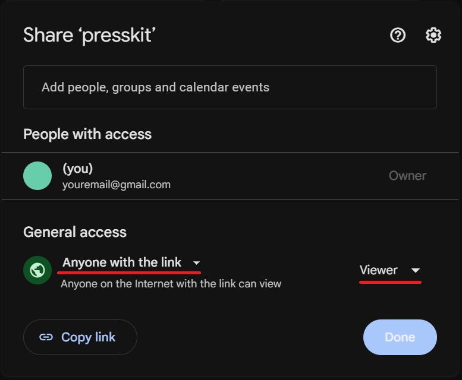
Option 2 — ZIP folder. Same content, neatly organised, compressed and labelled (YOURNAME_EPK.zip). Attach to emails or host on Dropbox/Drive.
Keep filenames professional (YOURNAME_Bio_Short.pdf, not final_final_REALbio.docx). Update every few months. Test the link before sending — promoters shouldn't have to request access.
Harmonic Mixing
Heard of the Camelot wheel and wondered WTF it is? Mix tracks in compatible keys and you subconsciously reduce your crowd's audio fatigue. Non-musos won't clock it — but it's the little things that mark a great DJ. CBF reading? Here's a video for you ADHD-riddled gremlins.
A company called Mixed In Key started this back in 2006. Using music theory, you can make your mixing 'cleaner' by mixing tracks that sound good together. Non-audiophiles won't pick it up, but mixing in key subconsciously reduces your crowd's audio fatigue. Mixed In Key make software that analyses your track keys and claims to be the best detection software — but Rekordbox does it natively without paying extra, and it's pretty close most of the time. Rekordbox can display keys in either Classic or Alphanumeric format (Alphanumeric = Camelot); set it in Preferences › View › Key display format. CDJs will also highlight track keys that mix well in green — 900/2000NXS players and up do this as long as they're linked, even if your key setting is shown as Classic. Great if you're playing B2B and the other DJ has theirs set to Classic while yours is Alphanumeric.
The wheel works on a T-system: from any key you can move ±1 or ±2 steps around the same ring, or switch ring (A↔B) keeping the same number. Don't go diagonally — 8A to 9B or 7B will sound off.
8A (A minor) mixes well with 7A, 9A and 8B. (I can never remember off the top of my head what A minor mixes with — but I know that.) Hover or tap any key on the wheel to see its compatible matches light up.
SELECTED 8A → MIXES WITH 7A · 9A · 8B
It's not a major must-do like beatmatching, but it's the little things like this that help you stand out as a great DJ.
Moving Your
Rekordbox Database
Be warned — an absolute pain in the ass if your music's scattered across your PC. All in one folder already? This'll be easy.
- Copy the folder with all your music to the external drive (Finder/Explorer, or a tool like TeraCopy).
- Music all over the place? Now's the time to collect it into one folder.
- Rekordbox › Preferences (⚙) › Advanced (three dots) › Database management › Move database.
- Select the drive you already moved the music to.
You might have to relocate missing tracks, but if everything's in the one folder, Rekordbox should find the rest automatically. If you have to relocate individually, follow these steps:
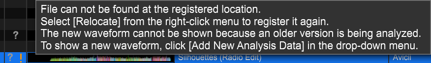
- Find a drink vessel.
- Fill it with your favourite alcohol of choice, or whatever's closest in proximity.
- Cry. Like, a lot. You're gonna be there a while.
Backup Your Shit
Please, for the love of god. Computers die, hard drives die — and rebuilding a collection costs you hundreds of hours. Keep an identical clone of your music drive and back it up monthly.
I've seen way too many DJs and producers (looking at you, Tai and Annie) lose their entire collection. Hell, your house might burn down. Which brings us to the golden rule:
3 copies of your data, on 2 different devices, with 1 offsite copy.
Troubleshooting & F*ck-Ups
For the scenarios where you've broken something.
| Symptom | Fix |
|---|---|
| Accidentally deleted all your music? | Check the recycle bin/trash first. Still gone? Reimport playlists from a previously exported USB — right-click the playlist in Rekordbox and it pulls the tracks into a "Contents" folder beside your database. |
| Broke someone else's CDJ? | Run. … Look, you might be up for a couple hundred dollars depending on the damage. |
| Why are all my tracks playing as soon as I load them? | Read this section — My Settings in the Appendix. |
| Why does my track skip to the next one in the playlist when it finishes? | Read this section — My Settings in the Appendix. |
| USB won't read in the deck? | Hope you brought a spare. Like I told you to (§01-C, §05-F). |
| FX not working? | Did you turn it on? Is the beat effect selected to the correct channel? |
| Sound only in left or right? | Check the Balance knob under Master level. Most mixers up to the DJM-NXS2 have it — they removed it on the DJM-A9. |
| DJM-A9 mic not working? | Use the On button, bottom left — new spot vs older mixers. They changed it from a toggle switch to two buttons. Trust. |
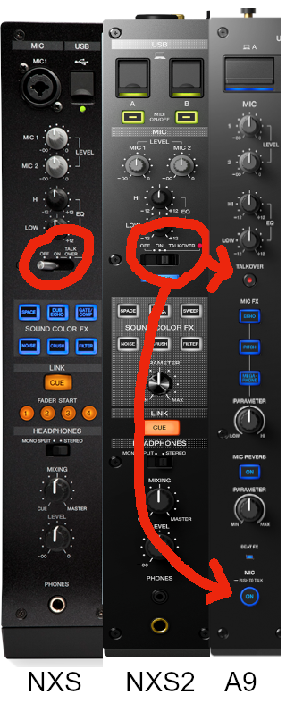
Appendix:
Recommended My Settings
My recommended CDJ settings — change whatever suits you. Save these to USB (§05-B) and load at the venue.
| Setting | Recommended | Why it matters |
|---|---|---|
| Play Mode / Auto Play | Single / Off | Stops the next track auto-playing — you're in control |
| Eject / Load Lock | Lock | Stops accidental reloads over a playing track (or yours getting ejected in a B2B) |
| Needle Lock | Unlock | Lets you skip through a track with the needle strip |
| Quantize Beat Value | 1 Beat | Keeps cue/hot cue snaps clean — most common |
| Hot Cue Auto Load | On | Loads all hot cues on track load — handy for prep-heavy DJs |
| Hot Cue Color | On | Coloured hot cues on the deck screen — visibility |
| Auto Cue Level | Memory Cue | Jumps to first memory cue / skips silence on load |
| Time Mode | Remain | Shows time left, not elapsed — better for mixing timing |
| Auto Cue | On | Track won't start playing automatically when loaded |
| Jog Mode | CDJ | Disables touch-to-stop (Vinyl mode) — safer in clubs unless you're doing scratch routines |
| Tempo Range | ±6 | Fine control for tempo changes; bump to ±10/16/100 for wide-range genres |
| Master Tempo | On | Keeps pitch stable when adjusting BPM |
| Quantize | On | Locks to the grid — great for hot cues and loops |
| Sync (BPM/Beat) | Off | Default off — turn on manually if needed |
| Phase Meter | Type 2 | Line-style (NXS2 / 3000) — easier visual beatmatching |
| Waveform / Phase Display | Waveform | Full master waveform — phrasing & structure awareness |
| Waveform Divisions | Phrase | Splits the track into phrases — helps transitions |
| Vinyl Speed Adjust | Touch | Quick stop/start in Vinyl mode |
| Beat Jump Beat Value | 16 Beat | Best for skipping long intros/breaks cleanly |
| LCD Brightness (Main Display) | 3 | Medium brightness — clear without blinding you in a dark club (bump to 5 outdoors during the day) |
| Jog LCD Brightness (Deck Display) | 3 | Same as above — balances visibility |
| Jog Display Mode | Auto | Lets the deck decide — or set to "Vinyl" or "CDJ" manually if you prefer |
| Slip Flashing | On | Flashes the jog ring when slip mode is active — visual reminder |
| On Air Display | On | Shows which deck is live when linked via Pro DJ Link |
| Jog Ring Brightness | 2 (Bright) | Full visibility — looks clean and pro on CDJ-3000s |
| Jog Ring Indicator | On | Shows cue position around the jog wheel — helpful for beat juggling or tight loops |
| Disc Slot Illumination | 2 (Bright) | Legit doesn't matter unless you're playing with CDs |
| PAD / Button Brightness | 3 | Mid-level brightness for hot cue / loop pads — adjust to suit the venue |